Support de cours Véronique Gay-Rosier : Ressources et bibliographie
Bibliographie
[Cliquez ici ••• pour accéder directement au chapitre]
Ressources Édition
[Cliquez ici ••• pour accéder directement au chapitre]
Ressources Mémoires
[Cliquez ici ••• pour accéder directement au chapitre]
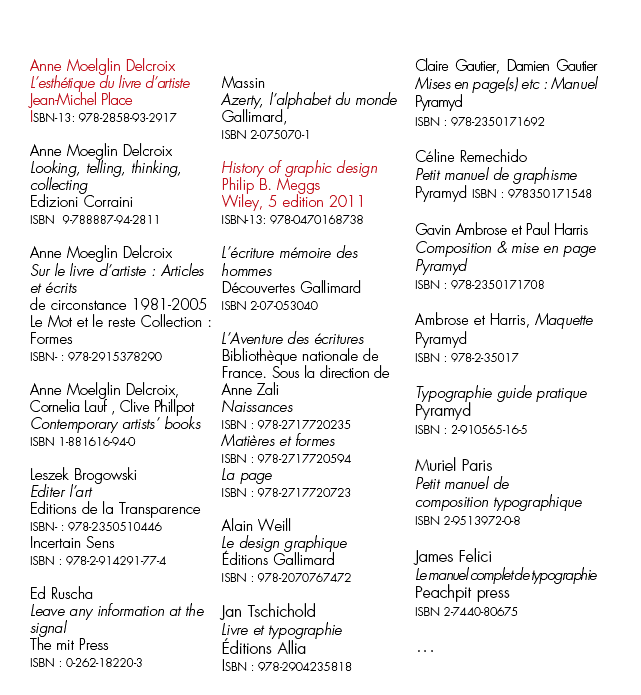
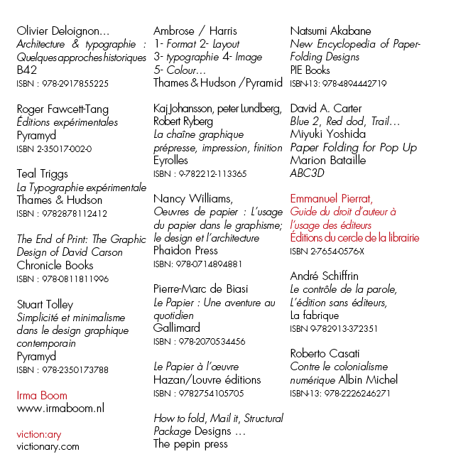
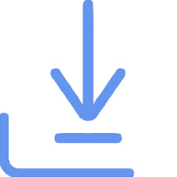
A history of graphic design, B.Philip Meggs Alston W. Purvis
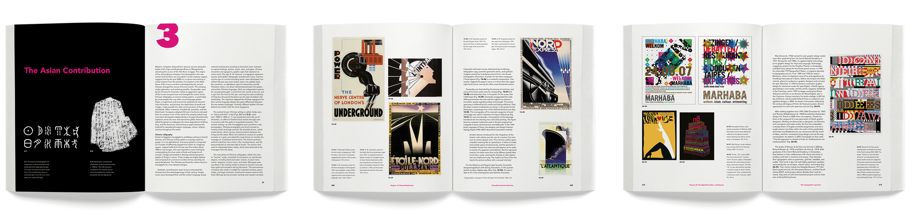
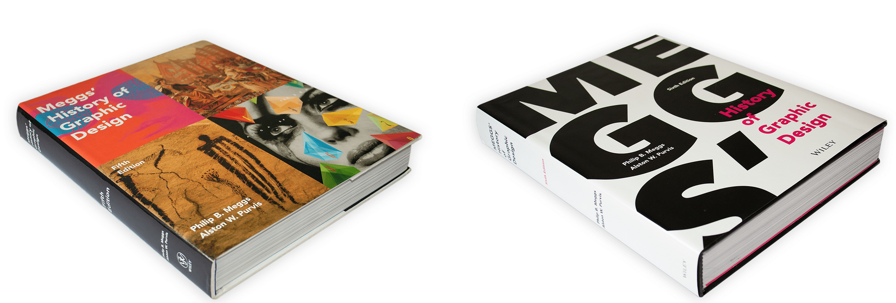
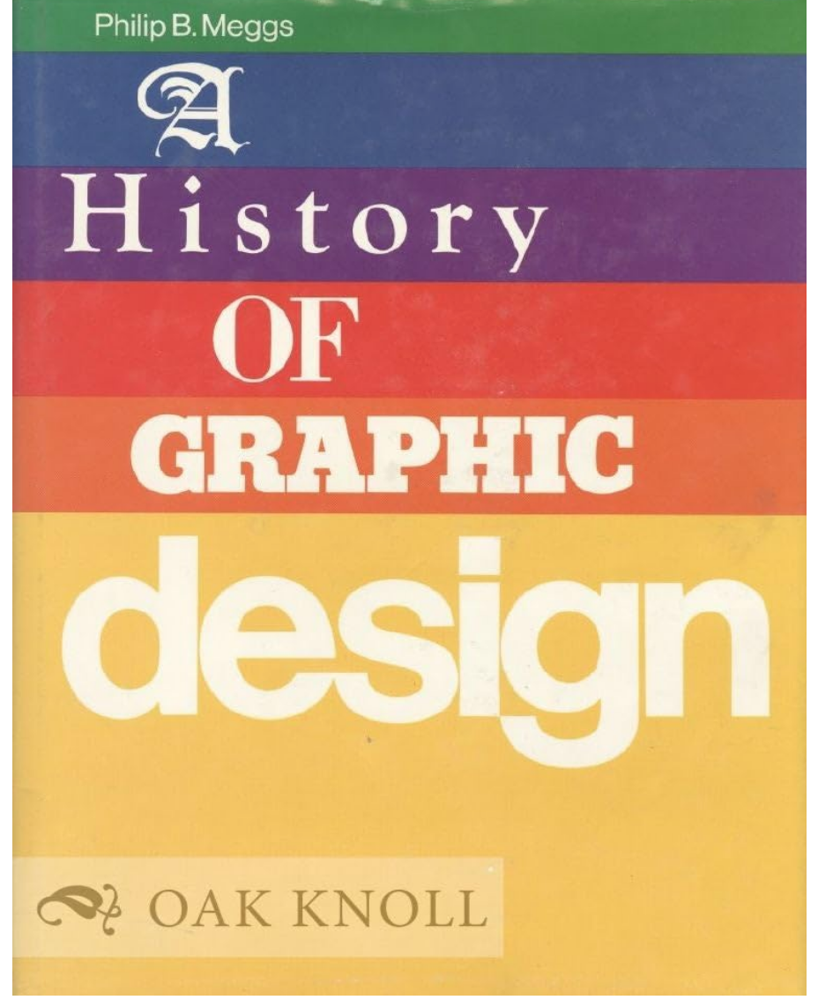
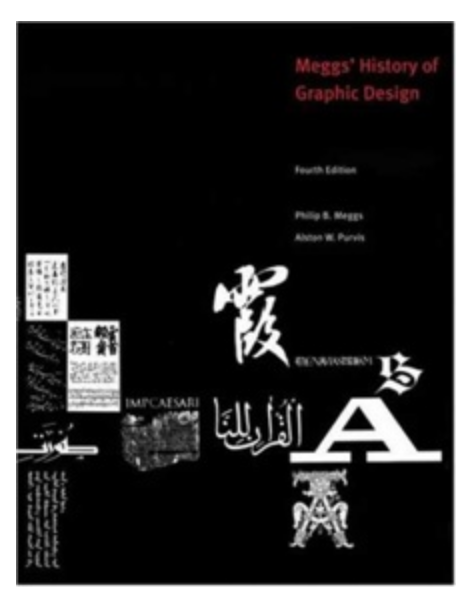
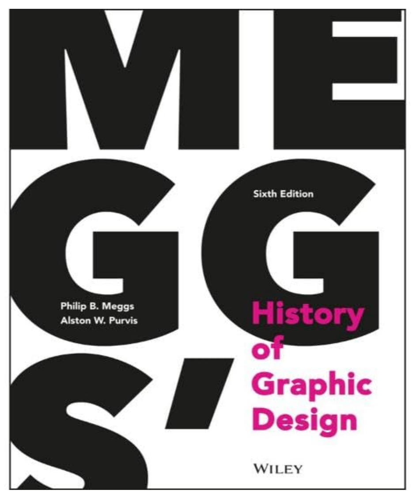
• Part I -The Prologue to Graphic Design The visual message from prehistory through the medieval era
• Part II -A Graphic Renaissance The origins of European typography and design for printing
• Part III -The Bridge to the Twentieth Century
The Industrial Revolution: The impact of industrial technology upon visual communications
• Part IV -The Modernist Era
Graphic design in the first half of the twentieth century
• Part V -The Age of Information Graphic design in the global village
• How to fold – Méthodes de pliage
Agile Rabbit editions
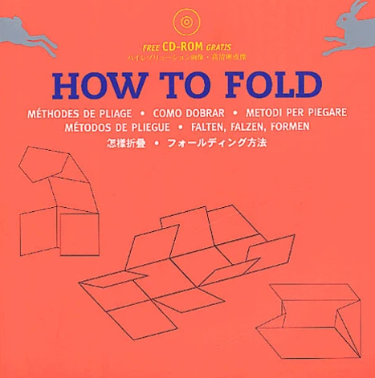
[téléchargement]
• Lexique des règles typographiques en usage à l'Imprimerie nationale
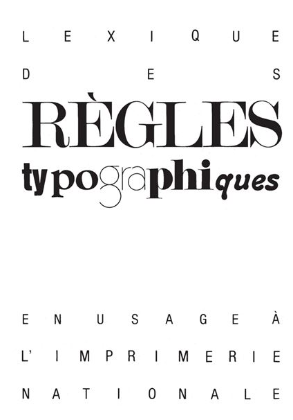
• Azerty, L'alphabet du monde, Massin
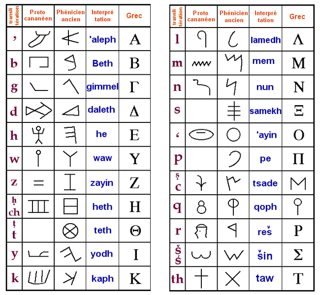
• Gavin Ambrose et Paul Harris [Format, Layout, Typography, Image, Colour]
• Bibliographie de Michel Pastoureau sur la couleur
• Figures et couleurs. Études sur la symbolique et la sensibilité médiévale, Paris, Le Léopard d'Or, 1986.
• Couleurs, images, symboles. Études d'histoire et d'anthropologie, Paris, Le Léopard d'Or, 1989.
• L'Étoffe du diable, une histoire des rayures et des tissus rayés, Paris, Seuil (Point Essais), 1991 (ISBN 2020611988).
• Dictionnaire des couleurs de notre temps, Paris, Bonneton, 1992.
• Jésus chez le teinturier. Couleurs et teintures dans l'Occident médiéval, Paris, Le Léopard d'Or, 1998.
• Le Petit Livre des couleurs (avec Dominique Simonnet), Paris, Panama, 2005.
• Les Couleurs de nos souvenirs, Paris, Le Seuil, La Librairie du XXIe siècle, 2010.
• Les couleurs de la France (avec Pascal Ory et Jérôme Serri), Paris, Hoëbeke, 2016.
• Une couleur ne vient jamais seule, Paris, Le Seuil, 2017.
• Série Histoire d'une couleur :
Bleu – Noir –
Vert –
Jaune –
Blanc –
Rose
• Les couleurs du Moyen Age. Dictionnaire encyclopédique. Le Léopard d'Or, 2022.
• Un dictionnaire en ligne : site du cnrtl (dictionnaire en ligne)
http://www.cnrtl.fr/definition/
• Articles, podcasts, vidéo
https://bibliobs.nouvelobs.com/essais/20120510.OBS5323/mais-que-fait-la-police.html
https://www.radiofrance.fr/franceculture/podcasts/serie-architecture-design-le-bauhaus-a-100-ans
—————————————————————————————
ÉDITION
/// SUJET ///
Propose aux étudiantes et aux étudiants de développer leur propre style graphique, leur propre design éditorial, d'affirmer leur positionnement de designer/directeur artistique sur un sujet qu’ils sont libres de choisir.
Les spécifications techniques sont libres tout comme le choix du contenu, en revanche il serait judicieux de proposer une monstration [un accrochage] pour le rendu, et indispensable de considérer le projet comme un laboratoire de design éditorial.
• Edward Ruscha
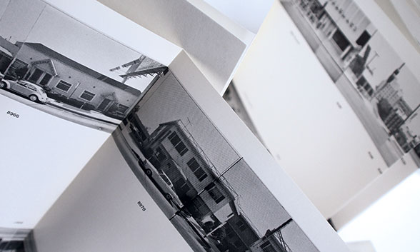
Every Building on the Sunset Strip, Ed Ruscha, 1966
Royal Road Test, Edward Ruscha with Mason Williams, Patrick Blackwell, 1967
https://www.moma.org/collection/works/146932
https://www.moma.org/artists/5086
https://jeudepaume.org/evenement/ed-ruscha-photographe/
• Entretien avec Martin Parr : Le Pouvoir des Livres Photo
https://www.youtube.com/watch?v=8-g-Tfp14Ww
• Sol LeWitt
https://fraenkelgallery.com/exhibitions/sol-lweitt-photographic-works-1968-2004
https://www.tate.org.uk/art/artists/sol-lewitt-1504/sol-lewitt-studio-visit
https://www.paulacoopergallery.com/exhibitions/sol-lewitt14#tab:slideshow;tab-1:thumbnails
https://www.centrepompidou.fr/fr/recherche/oeuvres?artiste=Sol%20LeWitt
https://www.youtube.com/watch?v=H-k4Rsa1aSQ&t=88s
• Michael Snow
• Autres exemples
• BLOC
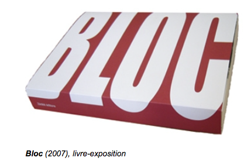
Bloc rassemble la plupart des inventaires entrepris par Eric Watier depuis une dizaine d’années : Choses vues, Architectures remarquables, L’inventaire des destructions, Donner c’est donner, etc. Ces deux derniers sont des courtes histoires évoquant ces artistes qui pour des raisons politiques, idéologiques ou personnelles, ont détruit ou donné leurs œuvres. Ce rapport à la destruction et au don apparaît en filigrane dans le livre, par sa forme même et par l’usage qu’on peut en faire. Le livre est protégé par une jaquette en papier, et n’a pas d’autre couverture, le rendant à la fois massif et fragile. Le papier utilisé est léger, et l’ensemble n’est tenu que par une simple couche de colle : cette combinaison donne au livre la résistance nécessaire à une manipulation, mais elle permet aussi, comme le propose l’artiste, d’arracher tel ou tel feuillet sans risquer de défaire la pile. Car si BLOC est un livre, il se présente également comme une exposition : chaque feuille peut être détachée, encadrée, envoyée, donnée, etc. Eric Watier, depuis plus de dix ans, fait du « livre d'artiste » sa pratique artistique. Souvent simples d'apparence, et gratuites pour la plupart, ses publications prennent des formes variées : livrets, affiches, tracts, cartes postales, blocs, etc.
• Take Me (I'm Yours)
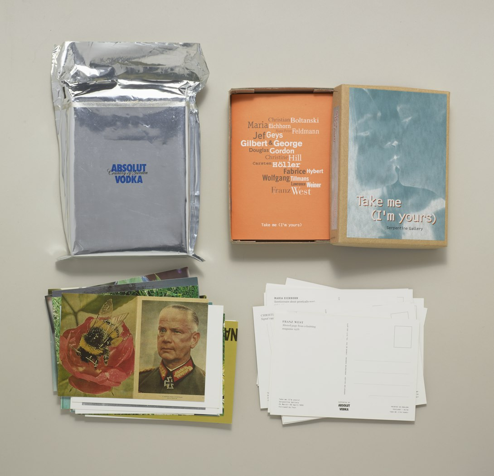
Christian Boltanski, Maria Eichhorn, Hans-Peter Feldmann, Gilbert & George, Jef Geys, Douglas Gordon, Christine Hill, Carsten Höller, Fabrice Hybert, Wolfgang Tillmans, Lawrence Weiner, Franz West
Codex Spatium (Serious Game), Julien Prévieux
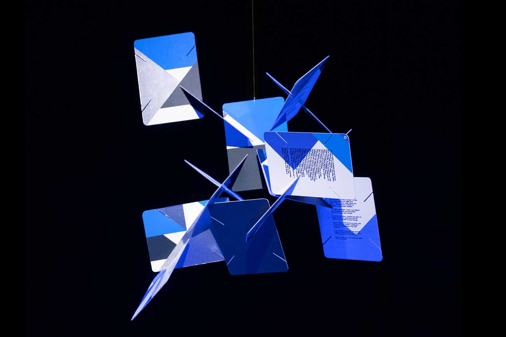
54 cartes, impression, adhésifs et carton, 14 x 20 cm (chaque), 2021-2023
Disponible en français et en anglais
Codex Spatium est un jeu hybride, tout à la fois jeu artistique, jeu de rôle coopératif et jeu de construction. Composé de 54 cartes emboîtables, il se joue seul ou à plusieurs et invite à repenser les règles d'exploration et d'utilisation de l'espace. Cet outil d'aide à la réflexion nous invite à améliorer notamment le Traité de l'espace extra-atmosphérique de 1967. Établi pendant la Guerre Froide, ce texte est aujourd'hui encore la pierre angulaire des règlementations des activités humaines dans l'espace. Mais le monde a changé, de nouvelles dynamiques géopolitiques, économiques et technologiques ont redéfini le domaine spatial, générant une série de problèmes inédits : gestion des orbites, débris spatiaux, exploitation des ressources des corps célestes, surveillance par satellites, activités militaires, ou encore protection des travailleurs de l’espace. À l'ONU, les négociations piétinent et il revient aux joueur.euse.s de proposer une mise à jour de cet accord. Les idées des participant.e.s prennent vie sous la forme d’un rapport destiné à l'ONU et se concrétisent dans un mobile, fruit de l’assemblage des cartes. Entre jeu artistique façon Fluxus et serious game, ce jeu invite les participants à se confronter aux enjeux contemporains du secteur spatial.
https://www.previeux.net/index.html
Douglas Huebler,
LOCATION PIECE #2
https://mouvements-ruevisconti.com/livres-d-artiste/1153-huebler-douglas.html
Publication, livre, imprimé Enveloppe contenant 19 cartes, dont 1 carte avec un texte en anglais de Douglas Huebler. Impression offset noir et blanc sur carton 19 x 19 cm "Enveloppe comprenant une carte de New York, une carte de Seattle et 16 photographies qui rendent compte de l'énoncé suivant : il a été demandé à deux personnes de photographier dans les deux zones géographiques sélectionnées des lieux pouvant procurer un sentiment de peur, d'érotisme, de transcendance, de passivité, de fièvre puis de protection. L'ensemble de ces photographies sont envoyées sans mention à l'artiste qui, pour cette édition, choisit arbitrairement 12 photographies auxquelles il ajoute quatre de ses tirages.
L’intérêt des photographies de Douglas Huebler ne réside pas dans leurs qualités propres. Les photographies doivent être comprises en lien avec le texte dactylographié qui les accompagne. L’objectivité chez Huebler passe par une photographie «pauvre», ou plus précisément déficiente, pour renvoyer au concept qui sous-tend l’œuvre. Il serait abusif d’y voir une démarche documentaire dans son acception courante.
Il privilégie donc logiquement la démarche sur le résultat. Pour le formuler d’une façon encore différente, ce qui intéresse Huebler, « ce n’est pas de pointer l’énonciation de la signification, c’est de pointer la façon dont se forme la signification. »
Les recherches d’Huebler à ce sujet sont en phase avec les écrits d’Umberto Eco sur L’œuvre ouverte.
Douglas Huebler construit son œuvre autour d’un protocole. Ce protocole est au départ de la production de photographies. Les effets secondaires liés à la réalisation du protocole se manifestent dans les photographies sous forme d’erreurs (en l’occurrence, de flous). Ces erreurs se présentent comme autant de déictiques que le spectateur aura à décoder. Elles pointent vers la structure de l’œuvre, là où se logent réellement l’art et l’intention de Douglas Huebler. Grâce à l’erreur, il réduit le caractère documentaire et narratif de la photographie en vue d’un embrayage critique vers le cœur de l’œuvre, vers la formation de la signification. Pour paraphraser Michel Butor qui s’exprimait à la même époque sur le Nouveau Roman, Huebler engage le spectateur à « la recherche d’une réalité, […], dont le sens profond est dans le mouvement même de la conscience appréhendant le monde extérieur et dans les rapports qu’elle établit entre les divers éléments de ce monde. »
https://www.centrepompidou.fr/fr/ressources/oeuvre/cdLBrg
I- L'édition laboratoire de modernité et de créativité
• Histoire et créativité
• Un coup de dés jamais n'abolira le hasard [Stéphane Mallarmé, 1897] : un des tout premiers poèmes typographiques de la littérature française."
• Dès le début du XXe siècle le design devient partie intégrante du livre. Marinetti, Lissitzky, Tzara, Queneau, Ionesco/Massin…
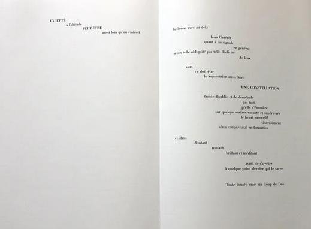
Un coup de dés jamais n'abolira le hasard, Stéphane Mallarmé, 1897. "Composé en vers libres, c'est l'un des tout premiers poèmes typographiques de la littérature française."
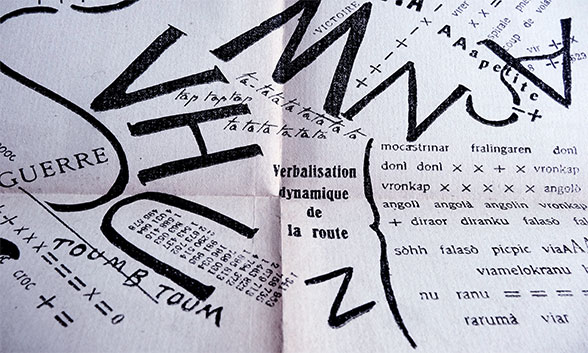
Les Mots en liberté futuristes, Filippo Tommaso Marinetti, 1923
Poème sonore rugissement des moteurs suggérés par la typographie.
https://www.bnf.fr/fr/mediatheque/stephane-mallarme-jamais-un-coup-de-des-nabolira-le-hasard
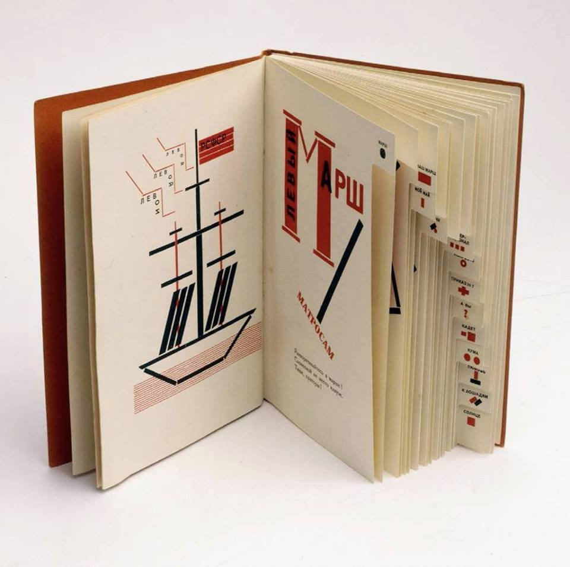
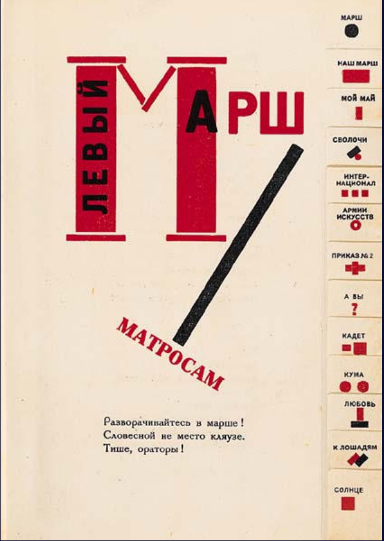
El Lissitzky et Maïakovski, À pleine voix, 1923.
Receuil de poèmes devant être lu en public.
Texte transformé en pictogrammes qui donnent au lecteur des indications de rythme et de signification.
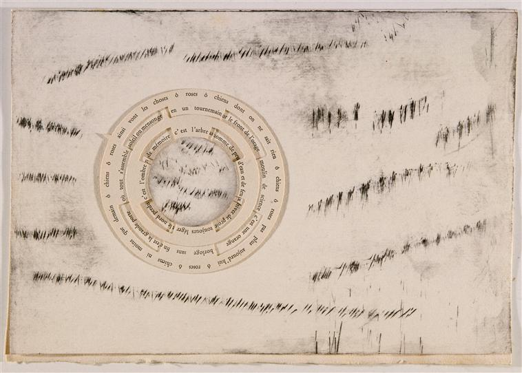
Tristan Tzara, La Rose et le Chien, 1958.
« Poème perpétuel » dont le texte est imprimé sur des volvelles (disques de papier cartonné qui tournent, procédé existant depuis le XVIe siècle) montés concentriquement avec un quatrième disque gravé à l'eau-forte par Picasso, le tout monté sur une gravure. La rotation des volvelles fait apparaître des organisations de mots différentes, d'où le titre de Poème perpétuel.
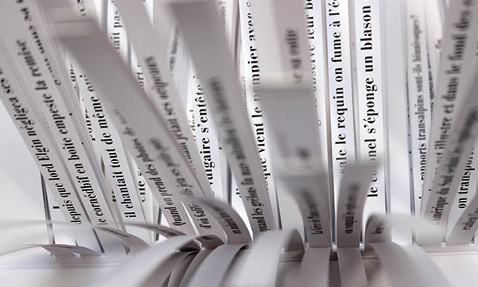
Raymond Queneau, Cent mille milliards de poèmes, 1961.
Livre animé de poésie combinatoire.
—————————————————————————————
• Christian Boltanski, Les Archives du Cœur, Teshima
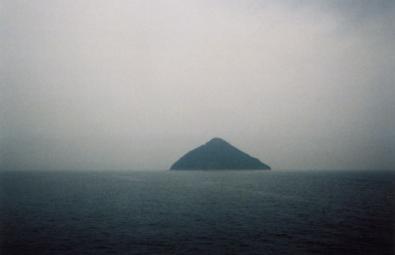
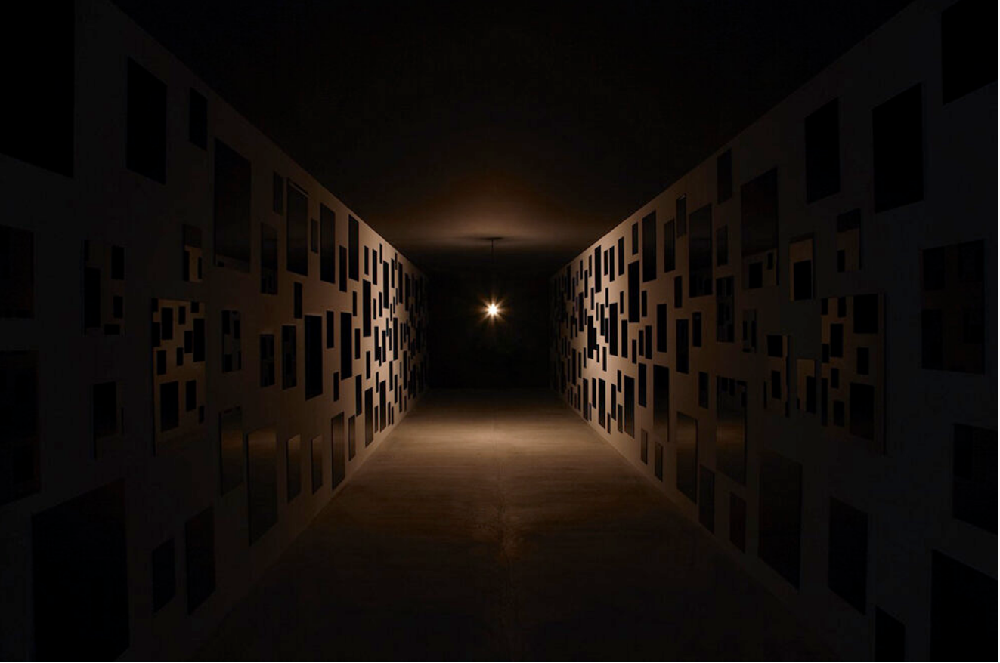
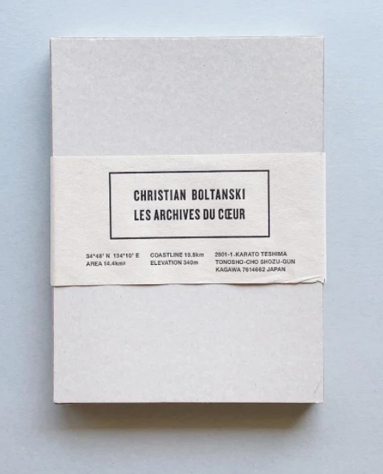
https://www.youtube.com/watch?v=GuIa5jAVRms&t=51s
—————————————————————————————
• « Une Rêverie émanée de mes loisirs »
https://www.yvon-lambert.com/fr/collections/une-reverie-emanee-de-mes-loisirs
Collection de livres de bibliophilie que le galeriste Yvon Lambert crée en 1992.
Ce titre fait référence à un texte de Jean-Claude Lebensztejn, véritable point de départ de la collection. À la demande d’Yvon Lambert, des artistes conçoivent un ouvrage, en ayant le choix d’intégrer comme ils le souhaitent des textes dans leurs projets.
Les quatre premiers ouvrages ont été imprimés à l’imprimerie nationale, dans la plus grande tradition de la bibliophilie.
Au fil des années la collection évolue, et le principe reste le même. Les artistes sollicités dans le cadre de cette collection conçoivent entièrement l’ouvrage, en collaboration ou non avec un écrivain.
Cet ouvrage est donc une œuvre d’art à part entière, une édition de 150 exemplaires, dont 108 exemplaires commercialisés. À ce jour, trente-et-un ouvrages ont été réalisés.
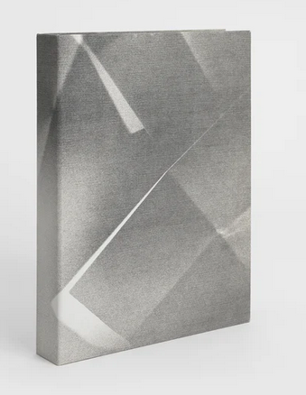
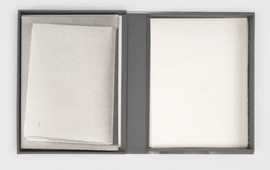
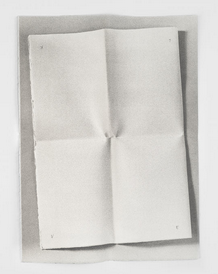
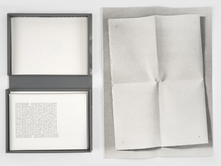
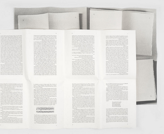
Giulio Paolini & Jean-Claude Lebensztejn, Œuvres complètes
1994
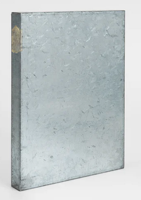
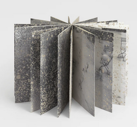
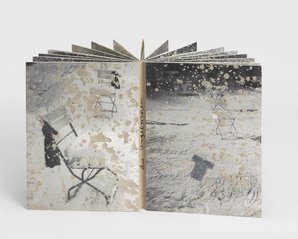
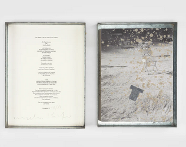
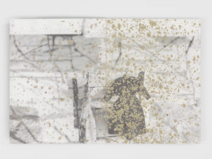
Anselm Kiefer, Die Ungeborenen
L’ouvrage est réalisé avec des photographies de l’artiste reproduites en impression numérique + collages originaux en cendres et en plomb.
• Richard long, Planes of vision
https://www.lissongallery.com/exhibitions/richard-long-21d943bd-1efe-4066-9d75-b006df45588d
https://demelzadesign.com/2021/11/14/richard-long/
—————————————————————————————
Images libres de droits et fonds documentaires qualifiés
New York public library :https://www.nypl.org/blog/2016/01/05/share-public-domain-collections
https://www.slate.fr/story/112447/bibliotheque-images-libres-droit
Wikimedia Commons : une médiathèque de 86 857 820 fichiers média librement réutilisables et que chacun peut enrichir.
• Recherche d'images BNF :
https://www.bnf.fr/fr/ressources-numeriques-en-art#bnf-recherche-d-images
+
Dossiers pédagogiques de la BNF
Expositions numériques de la BNF
Bibliothèque numérique BNF
• D'autres ressources iconographiques fiables :
Agence photographique RMN
Art ressource (homologue US de la rmn)
Centre Pompidou (ressources)
Joconde (catalogue des collections des musées de France)
Videomuseum - réseau des collections publiques d'art moderne et d'art contemporain
• Fonds patrimonial de la bibliothèque Jean-Laude :
UNE BIBLIOTHÈQUE DE RÉFÉRENCE, SPÉCIALISÉE EN ART MODERNE ET CONTEMPORAIN
https://www.navigart.fr/MAMC-saint-etienne-collections/artworks/thema03/%C3%89dition
—————————————————————————————
Prospective – Design social – IA
• Florie Salnot, Plastic Gold Workshop
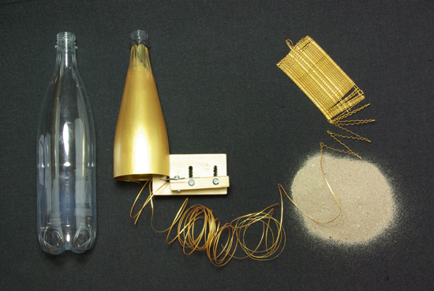
https://www.youtube.com/watch?v=44Opdzeq4oc
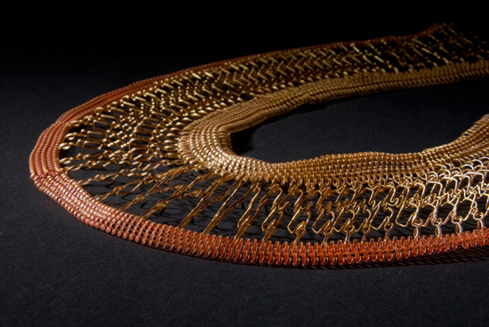
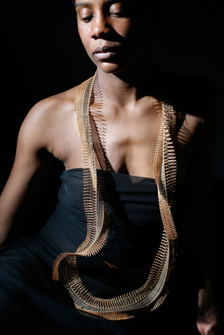
—————————————————————————————
• Packaging éphémère – This too small pass, studio Tomorrow machine
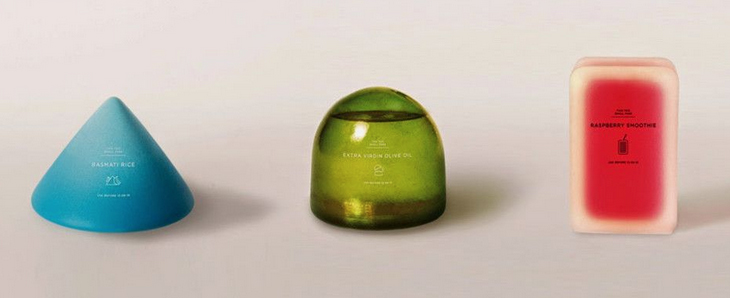
—————————————————————————————
• Design/conception pour le bien commun = Guide pour repenser les usages et trouver de nouvelles solutions
au service de projets de société plus responsables socialement, et plus vertueux écologiquement.
= recentré sur l’humain et sur le «vivant».
Victor Papanek, Design pour un monde réel: écologie humaine et changement social
«Le design, s’il veut assumer ses responsabilités écologiques et sociales, doit être révolutionnaire et radical. Il doit revendiquer pour lui le principe du moindre effort de la nature, faire le plus avec le moins.» Victor Papanek
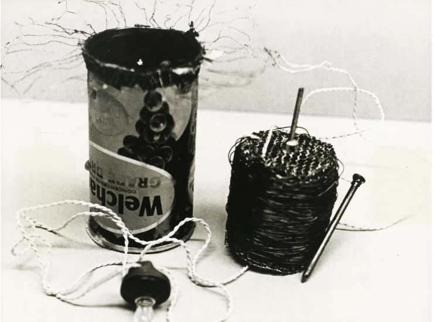
«Un de mes premiers travaux pour l’Unesco à Bali a été le développement de la Tin Can Radio, une radio alimentée par une bougie, du bois, ou des excréments de vache séchés. Comme l’emballage pour ce dispositif était une boîte de jus de fruits usagée, j’ai décidé de ne pas la décorer du tout afin d’éviter d’imposer une esthétique européenne aux Indonésiens.»
Victor Papanek
«Capacité du concepteur à imaginer et à donner forme à des produits matériels et immatériels qui peuvent répondre aux problèmes humains à grande échelle et contribuer au bien-être social». Victor Margolin, The Politics of the Artificial
—————————————————————————————
[téléchargement]
• Human Cities Challenging the City Scale
Alors que les villes européennes font face à des transformations urbaines et technologiques majeures, leurs citoyens ont décidé d'agir, en collaborant pour améliorer leur cadre de vie. Quel type d'outils sont mis en place pour penser et produire l'espace public ensemble ? Comment rendre ces initiatives émergentes durables ?
—————————————————————————————
• Joseph Beuys, un des précurseurs du design social
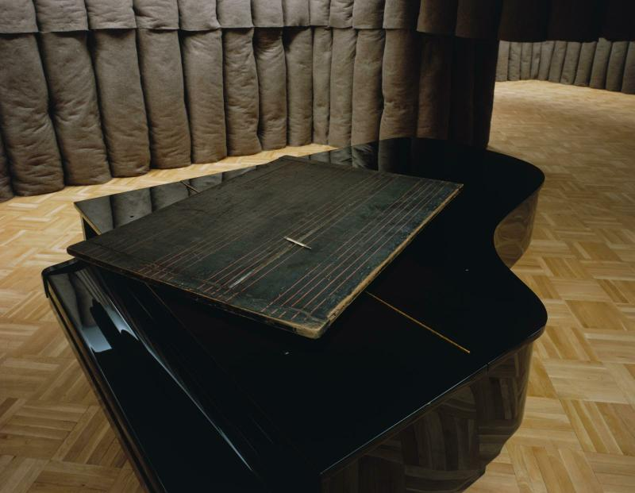
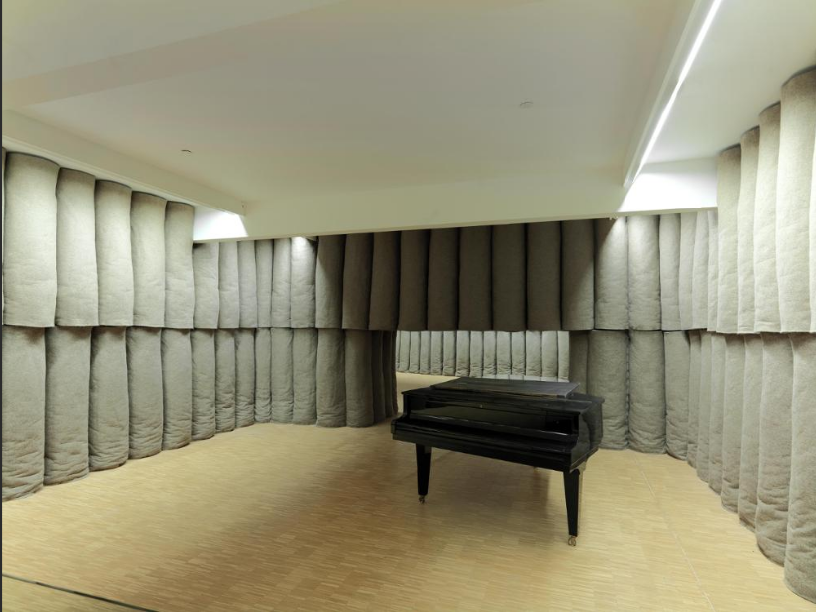
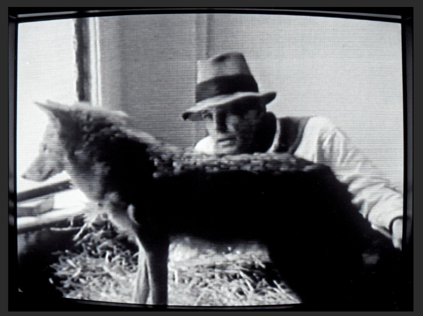
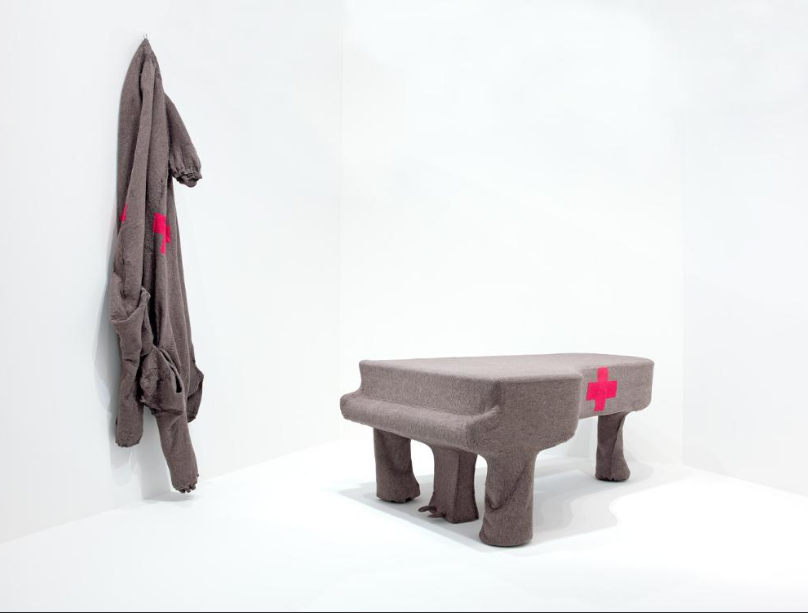
https://www.centrepompidou.fr/fr/recherche?terms=Joseph+Beuys
https://recitsdartistes.org/textes-theoriques/art-et-esprit/sandra-vuaillat/
—————————————————————————————
[téléchargement]
• La ville qui n’existait pas de Grégory Chatonsky.
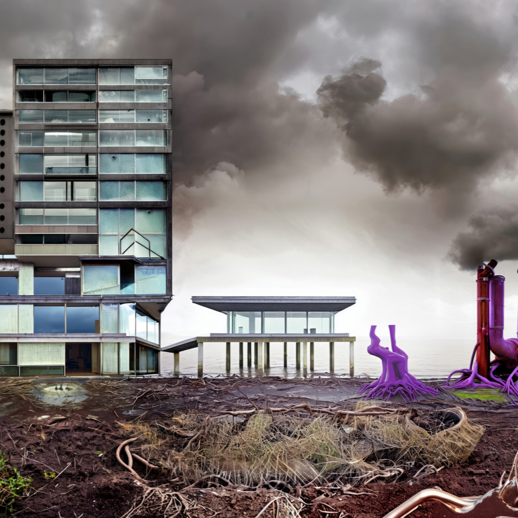
—————————————————————————————
[téléchargement]
• Speculative everything
+ d'autres ouvrages dédiés à la prospective
—————————————————————————————
ÉCO-CONCEPTION
• Polices écologiques.
Plus la police est fine, moins on utilise d'encre pour imprimer le même nombre de caractères.
Polices de caractère sont considérées comme parmi les plus écologiques :
• Garamond = économie de 30% d'encre /Arial
• Century Gothic = économie de 30% /Arial
Polices insèrant des « vides » dans les caractères :
• Ryman Eco = économie de 33% d'encre /Arial [Composée de traits fins].
https://www.youtube.com/watch?v=C4XcdpXtkmQ&t=100s
• Ecofont = économie de 28% /Arial
Insère des « trous » dans les lettres pour réduire la quantité d'encre. Peu d'incidence sur la lisibilité du texte logiquement! Les trous ne sont pas censés se voir en dessous de 14pt.
https://ecofont.fr.softonic.com/
+ Réduire la taille de la police + Réduire le niveau de gris + jouer sur les balncs sur la lisibilité
EXPLICATION :
«Le corps est la taille d’une fonte de caractères. Le corps d’une police est traditionnellement mesurée dans un système appelé points typographiques, un point correspondant à 1/72ème de pouce. Cela est vrai à la fois dans l’impression physique et numérique. Ainsi, une police de 12 points doit théoriquement mesurer 1/12e de pouce de hauteur une fois imprimée. C’est la théorie… mais la réalité est bien différente. Il n’y a aucune garantie que lorsque vous imprimez une police de 12 points, les lettres feront 12 points de haut (soit 0.42cm). Petit rappel (historique), le corps est la hauteur de la pièce métallique sur laquelle apparaît en relief la forme du glyphe représentant le caractère imprimé. C’est donc l’addition de la hauteur d’x, des ascendantes, des descendantes (autrement dit la hauteur maximale occupée par le dessin de tous les caractères, y compris avec accents et diacritiques) qui forment la hauteur réelle. Ce qui donne à une police de 12 points… une taille de 12 points (soit de 0,42cm) n’a rien à voir avec l’encre. Vous l’aurez compris, certaines polices de 12 points seront physiquement plus petites et donc… nettement moins lisibles que d’autres à la même taille ! C’est le cas du Garamond qui est sensiblement plus petit à la même taille de police que le Times New Roman, le Comic Sans ou encore le Century Gothic. En gros, le Garamond consomme moins d’encre car il est plus petit.»
PRISE DE CONSCIENCE :
«Depuis quelques jours, la nouvelle est reprise par tous les médias, un jeune garçon de 14 ans recommanderait l'usage du caractère "Garamond" pour faire économiser jusqu'à 136 000 millions de dollars au gouvernement Américain.
Il faut bien dire que l'annonce à tout pour faire rêver: un petit "prodige", un caractère qui a plus de 450 ans, et quelques milliers de mallettes de dollars d'économies.
Petit rappel des faits L'histoire débute lors d'un banal travail scolaire, il s'agit de chercher à faire réaliser des économies à son collège. L'adolescent de 14 ans (Suvir Mirchandani) choisit de se pencher sur problème de la consommation d'encre lors d'impressions de documents. "Même si les dépenses d'impression ont été diminuées ces dernières années, elles continuent d'être élevées et une petite baisse dans ce type de dépenses, notamment grâce à un changement de police, pourrait entraîner des économies considérables", expliquent l'élève et son enseignant. Le collégien précise qu'à quantité égale, l'encre est deux fois plus chère qu'un parfum.
Quel serait le caractère typographique idéal pour faire la plus grande économie d'encre ? D'après le collégien, ce serait la police Garamond. Un résultat qu'il obtient grâce au logiciel APFill® Ink Coverage Software qui permet de mesurer la quantité d'encre utilisée pour chaque lettre lors de l'impression. Il en déduit qu'une économie de 24% serait réalisable, ce qui représenterait 21 000 dollars par an pour son établissement, et même jusqu'à 136 millions de dollars à l'échelle de l'ensemble de l'administration Américaine.
On apprend au passage que les pouvoirs publics Américains dépensent 467 millions de dollars pour l'encre de ses imprimantes, un chiffre vertigineux !
Pourquoi c'est une bonne question, mais une mauvaise réponse... Pour pouvoir comparer le taux "d'encrage" deux typographies, il ne s'agit pas simplement de comparer l'encre utilisée pour deux textes imprimés en corps 10 pt. En effet, la taille d'un caractère est toute relative, la hauteur d'x ( le nom donné à la hauteur du tracé d’un caractère bas-de-casse, sans hampe ni jambage des minuscules) étant relativement variable selon le dessin typographique. Ainsi, dans cas de la Garamond, cette hauteur d'x est très faible, ce qui oblige d'augmenter la taille du corps pour obtenir une taille équivalente à une autre typographie ( et donc conserver un niveau de lisibilité équivalente).
Cependant, on ne peut que louer la médiatisation de cette information. Elle a l'immense mérite de mettre la typographie au centre des enjeux majeurs de notre temps. Bien que la typographie soit une discipline discrète par nature, elle en reste néanmoins l'expression du design graphique la plus utile au monde, celle de représenter visuellement la pensée, d'être une "passeuse" d'informations et d'idées. En cela, le designer de caractères à une responsabilité immense pour que chacun de ses "pieds-de-mouche" ai un "effet papillon positif" sur la pensée humaine.
Dès lors, avertir le grand public de l'intérêt de se pencher sur ces infimes variations typographiques est déjà un grand pas ! La technique du stylo bille Pour revenir à la question de l'économie d'encre, deux étudiants se sont amusés à "colorier" différentes typographies avec des stylo BIC. Un stylo par typographie permet de mesurer "visuellement" la quantité d'encre utilisée... La démonstration est efficace, même si elle n'est pas très scientifique...
Évidemment tombé dans le domaine public, tout le monde peut créer sa version du Garamond. Il existe aujourd'hui au moins 6 versions, qui il faut bien dire, n'ont parfois plus grand-chose de commun. On peut commencer par citer la version de Francesco Simoncini (Simoncini foundry, Bologna, 1958), puis celle de la fonderie Stempel (devenu ensuite Linotype) en 1924, le Garamond de Fritz Max Steltzer pour la fonderie Monotype en 1922, le Garamond de Tony Stan en 1970 dessiné pour International Typeface Corp, et plus récemment celui d'Adobe, dessiné par Robert Slimbach en 1988.
[…] Au vue des différences entre ces versions, on peut convenir qu'elle n'ont probablement pas toutes le même taux d'encrage !
La question de la lisibilité L’un des facteurs les plus importants en typographie reste évidement la mesure de la lisibilité, c’est à dire l’effort oculaire nécessaire pour identifier les lettres. C’est la fatigue de l’oeil qui est la véritable mesure de cette lisibilité. Le créateur de caractères, Ladislas Mandel (1912-2006) en a fait l'œuvre de sa vie. Il a analysé comment un lecteur appréhende une page typographique, lit les mots (aspect physiologique) et décrypte l’information à travers ses filtres culturels. Il a développé une véritable “science” de la lisibilité des caractères typographiques, par l’expérimentation sur de très petits corps, jusqu’au corps 3 (1,05 mm) à l'usage des annuaires. Il s'agissait évidement d'une question d'économie de papier (et d'encre).
À la question "Comment faire passer autant d’information et de sensation dans si peu d’espace?" Mandel répond: On croit que dans les petits corps on ne voit pas la lettre, mais pourtant on la “lit”, dans la lecture globale que l’on fait des mots. Ce sont les “constantes formelles”, alternances et rythmes, qui conditionnent le premier regard culturel que l’on porte sur des mots typographiés – comme sur n’importe quel objet d’ailleurs. C’est ce premier regard “culturel”, un accord de sympathie, qui doit engager à aller plus loin. Cette sensibilité au langage formel permet à Ladislas Mandel d’exprimer dans les formes une certaine sensibilité, reconnaissable, pour que le lecteur s’y retrouve, “vibre” en résonance. Comme un “paysage typographique” qui nous serait familier, où l’on se sent à l’aise, dans lequel on ne craint pas de se perdre. Dans lequel on pourra, en toute sérénité, trouver l’information recherchée : un seul et unique numéro de téléphone.
L'une des réponses les plus pertinentes en matière d'économie d'encre est le logiciel Eco-Font. A la base, il s'agit d'une idée toute simple, faire des trous dans une typographie afin de réaliser des économies d'encre sans que la lisibilité en soit perturbée. D'une simple typographie trouée, le concept a évolué vers un logiciel d'impression permettant d'imprimer avec n'importe quelle typographie qui sera "trouée" au moment de l'impression. Il est alors possible de conserver sa typographie préférée tout en faisant un geste pour la planète.»
[Extrait d'un article paru dans la revue Étapes]
https://fr.wikipedia.org/wiki/Ladislas_Mandel
• L’éco-branding, initié par Sylvain Boyer, a pour objectif de réduire considérablement l’empreinte écologique de la communication visuelle en s’appuyant sur quatre axes de réflexions :
- les logos,
- les couleurs,
- les typos
- l’interface
Ecobranding CMYK Color Guide [pour utiliser moins d'encre]
https://ecobranding-design.com/
—————————————————————————————
Autres références
• RG est à la fois un livre de création et un essai, une bande dessinée, un poème et un livre d’art. Cinq propositions de relecture de l’ensemble des aventures de Tintin (couleurs imprimées, formes dessinées, subtilités narratives, couleurs mentionnées). Cinq parties : quatre parties image (Mégacycle, Ectoplasme, Supercolor, Cyclotron) et une partie texte (Gyroscope).
—————————————————————————————
• Véronique Dassié, Objets d’affection. Une ethnologie de l’intime
https://journals.openedition.org/teth/261
—————————————————————————————
• Le lettrisme
https://www.centrepompidou.fr/fr/recherche?terms=lettrisme
Isidore Isou De la lettre à l'image https://www.centrepompidou.fr/fr/offre-aux-professionnels/enseignants/dossiers-ressources-sur-lart/de-la-lettre-a-limage/isidore-isou
https://www.wikiart.org/fr/isidore-isou/all-works#!#filterName:all-paintings-chronologically,resultType:masonry
Maurice Lemaître, l'agitateur du lettrisme
https://www.centrepompidou.fr/en/magazine/article/maurice-lemaitre-lagitateur-du-lettrisme
—————————————————————————————
—————————————————————————————
• Le stylo interactif du Cooper-Hewitt Museum à New York, 2015
"Il est noir, long, plus lourd et plus épais qu’un crayon classique, pas très esthétique… mais il fait des merveilles ! Ce drôle de stylo bourré de technologies est distribué à chaque visiteur dès l’entrée au Cooper-Hewitt, le musée new-yorkais dédié au design et aux arts décoratifs. Adultes et enfants l’utilisent ensuite à leur guise sur la quinzaine de tables interactives équipées d’écrans haute-définition. Objectif ? « Les amener dans un processus de conception, leur montrer la puissance du design et sa capacité à résoudre les problèmes du quotidien », résume Caroline Baumann, la directrice du musée.
Ce petit-bijou de technologie donne accès à du contenu sur tous les objets de la collection (plus de 210 000 !) : leur genèse, leur créateur, leurs matériaux… Inutile de prendre des notes, toutes les données sont enregistrées sur un compte ensuite accessible en ligne. Chacun crée ainsi son mémo personnel. La créativité des visiteurs est aussi sollicitée : sur un écran, ils modifient la forme d’objets familiers. Sur un autre, ils conçoivent leur propre motif de papier peint, projeté en live sur les murs de la galerie.
Le dispositif interactif qui permet de créer et projeter son papier peint dans une pièce est l’attraction actuelle du musée.
En plus du stylo interactif, robotique et impression 3D ont aussi droit de cité au Cooper-Hewitt : si le musée a fait le pari du numérique, c’est grâce à Bill Moggridge, son ancien directeur, lui-même designer industriel et inventeur du premier PC portable. Pari réussi : cette institution fondée en 1897 et qui a rouvert ses portes fin 2014 après trois ans de travaux est aujourd’hui considérée comme le plus réussi des musées 2.0.
Le Process Lab met à disposition des visiteurs outils et matériaux pour jouer au designer.
Et l'IA dans tous ça!?

• IA = 95% de réussite pour reconnaitre un chat = après avoir été nourrie avec 100 000 images de chat. + Pas de contextualisation.
1 enfant = 2 instances de chat suffisent!
• 1er Chat Bot de Microsoft raciste et sexiste (fermé après 16 heures d'utilisation!)
• 1 grand data center = consommation d'une ville française de 100 000 habitants en électricité et en eau
• 1 internaute = consommation de 365kw + 2900 litres d'eau par an = consommation annuelle électrique de 10 haïtiens et assez d'eau pour survivre pendant 2 ans et demi
• 1 selfie posté sur 1 mur facebook => dizaines de milliers de km de fibres et de cables jusqu'aux data centers = 3/4 ampoules de 20 watts allumées pendant 1 heure… et il y a 2 milliard d'abonnés
• Si internet était un pays = ce serait le 3e consommateur d'électricité au monde derrière la chine et les USA
• La blockchain pesera 20% de l consommation électrique de la planète
• Bitcoin = 100 terawoltheure par an = consommation en énergie des Pays-Bas. [+ cartes mémoires + cartes mères + disques durs … + eau et climatisation pour refroidir les serveurs!]
• Deep Mind consomme plus de 440 000 watts par heure juste pour jouer au go alors que notre cerveau fonctionne avec seulement 20 watts par heure et pour effectuer plein de tâches
• 5G = un leurre/capacité physiologiques de perception. Utile uniquement en micro chirurgie pour sa vitesse d'exécution.
=> Réflexion sur la 5G en local sans passer par cloud/data center.
Small data pour la smart city= mode opératoire de proximité (comme un réseau wifi plus performant) pour une ville humaine et génératrice du vivre ensemble. 1 écosystème adaptatif d'outils et de services à la personne.
Plan du cours "Initiation à la recherche"
Attendus ECV [Résumé ECV du Plan du cours ci dessus]
Grille de notation
—————————————————————————————
Support de cours Véronique Gay-Rosier.
Soumis à droits d'auteur = droits réservés = ne peut être diffusé.
Iconographie et citations utilisées uniquement dans ce cadre précis et dans un but pédagogique. Les images étant soumises à droits d'auteur = droits réservés.